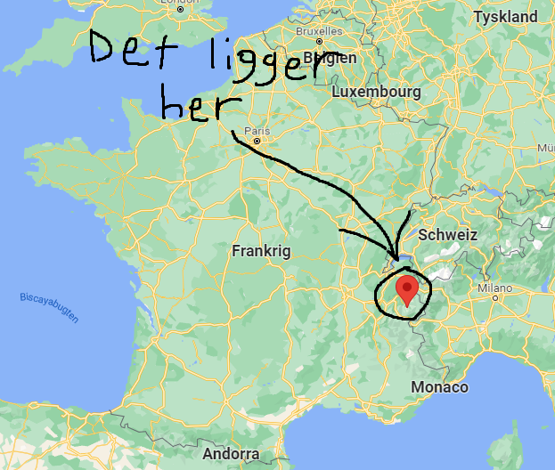
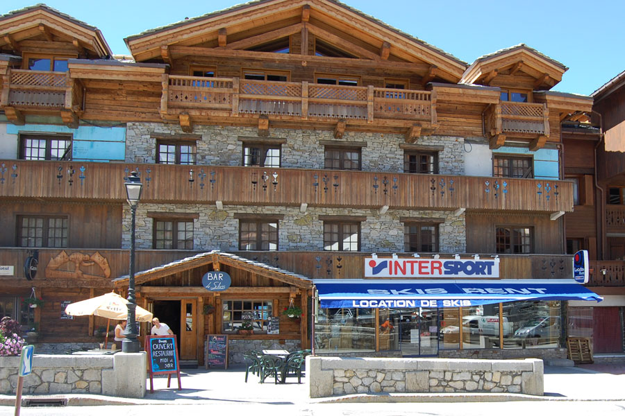
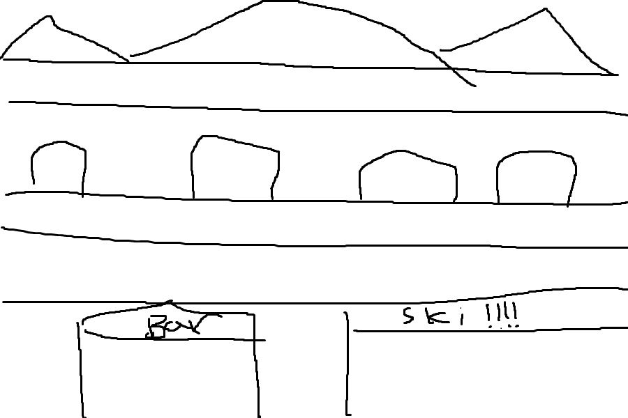

Courchevel
I uge 11 2022 tager familien Hesk på skitur, og turen går til Courchevel!
Hvor?
Med min dybdegående viden indenfor geografi vil jeg beskrive Courchevel med en lille smule hjælp fra Wikipedia.ㅤㅤㅤㅤㅤㅤㅤㅤㅤㅤㅤㅤㅤㅤㅤㅤㅤㅤㅤㅤㅤㅤㅤㅤㅤㅤㅤㅤㅤㅤㅤㅤㅤㅤㅤㅤㅤㅤ Courchevel er et kendt ferieområde for skisport og andre vinteridrætsgrene. Courchevel ligger Savoie-regionen i de franske alper, og er en del af Les Trois Vallées som er det største sammenhængende vintersportsted i verden.

Hotellet
Vi skal bo på et lækkert hotel kaldet "Chalethotel Les Cascades" med skiudlejning og en lille bar ;)
Nok med en anelse mere sne end på billede, men skal nok tage et bedre billede når vi når derned.
Sådan her ser det rigtigt ud:
Ski
Som sagt er det et mega fedt kendt skisted. Her er et kort over ruterne:

Det kan være en del utydeligt, men man er velkommen til at zoome ind (Contol + scroll), så man kan læse de individuelle steder.